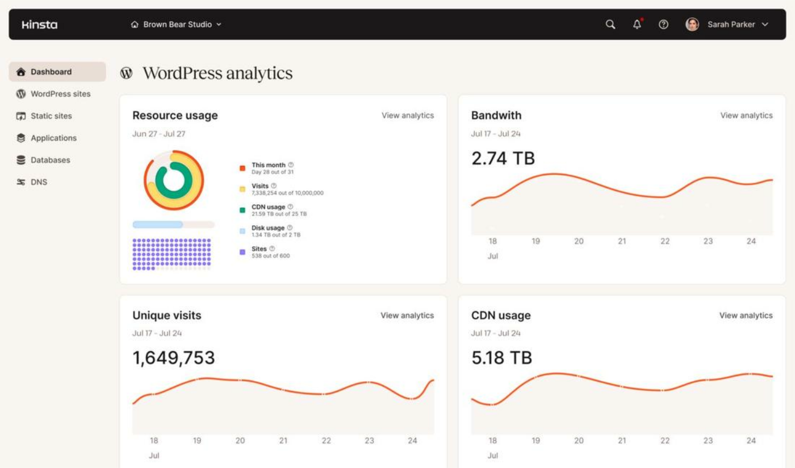

Kinsta vs WP Engine: Premium WordPress Hosting for People With No IT Help
Try it: Visit Kinsta (affiliate link: we may be paid if you sign up, at no extra cost to you).

Sensible Stack: Streamlining business, whatever your size
Disclosure: This page contains affiliate links. If you buy through them, we may earn a commission at no extra cost to you.
The short answer
Choose Kinsta if you want Google Cloud infrastructure, a clean custom dashboard, and pricing with a one off plus recurring value story for performance focused sites.
Choose WP Engine if you want a long established managed WordPress host with strong agency tooling, included premium themes via StudioPress, and a wide plan range for different site sizes.
Both are premium managed hosts. Neither is the right answer for a hobby site where cheap shared hosting is good enough.
What managed WordPress hosting means
A managed host handles the server stack, security patching, caching, backups, staging sites and WordPress specific support. You pay more than shared hosting, and in return you stop being your own server administrator. For a business site that takes bookings or sales, that trade is usually worth it. For a personal blog with no revenue, it usually is not.
Infrastructure and dashboard
Kinsta runs on Google Cloud Platform and uses its own MyKinsta dashboard, built only for its platform. Reports on speed, visitors and errors sit in one place, and staging is a first class feature.
WP Engine runs its own managed platform built over major cloud providers, with a more traditional portal, plus developer and agency workflows, transferrable sites for client work, and StudioPress themes included on most plans.
Pricing shape
Both publish tiered plans by visits, storage and number of sites. The honest way to compare them is not the entry plan headline, it is the tier your real traffic fits into, plus overage terms. Read the visit counting method on each site before you buy, because a bot heavy month can move you up a tier on any visit based plan.
Compare the plans yourself: Visit Kinsta and Visit WP Engine.
Where Kinsta wins
- Clean, modern dashboard that non technical owners find easier
- Google Cloud infrastructure story, with a wide choice of data centre locations
- Strong performance tooling and analytics built in
Where WP Engine wins
- Longer track record and a very large agency user base
- StudioPress themes included, real value if you would otherwise buy them
- Agency and client handover workflows are mature
Where each one frustrates people
Kinsta: visit based pricing can surprise growing sites, and some popular plugins are restricted for performance or security reasons.
WP Engine: the portal feels older, plan limits can also bite on traffic spikes, and the best value often sits above the entry tier.
Choose the other one if
Choose Kinsta over WP Engine if dashboard simplicity and Google Cloud matter most, and you want the newest feeling platform.
Choose WP Engine over Kinsta if you are an agency handing sites to clients, want included themes, or prefer the longest established managed host.
Ratings by business type
Kinsta: Solo 8, Micro team 8, Growing business 8, Mid sized 7, Agency 8, Online seller 9, Creator 8. The set and forget host, strongest where WordPress uptime is revenue.
WP Engine: Solo 7, Micro team 8, Growing business 8, Mid sized 8, Agency 9, Online seller 9, Creator 8. The edge moves to WP Engine when there are several sites to run.
Best suited to: both, any WordPress dependent business: publishers, WooCommerce shops, course and membership sites, agencies.
Verdict
For a single business site owner who values simplicity: Kinsta.
For agencies and multi site owners who value tooling and themes: WP Engine.
Either is a large step up from cheap shared hosting. The wrong choice here is staying on a host that loses you bookings when the site goes down.
Research note: Features checked against vendor published pages, November 2026. Confirm current plan limits, visit definitions and pricing on the vendor site before buying, plans change.